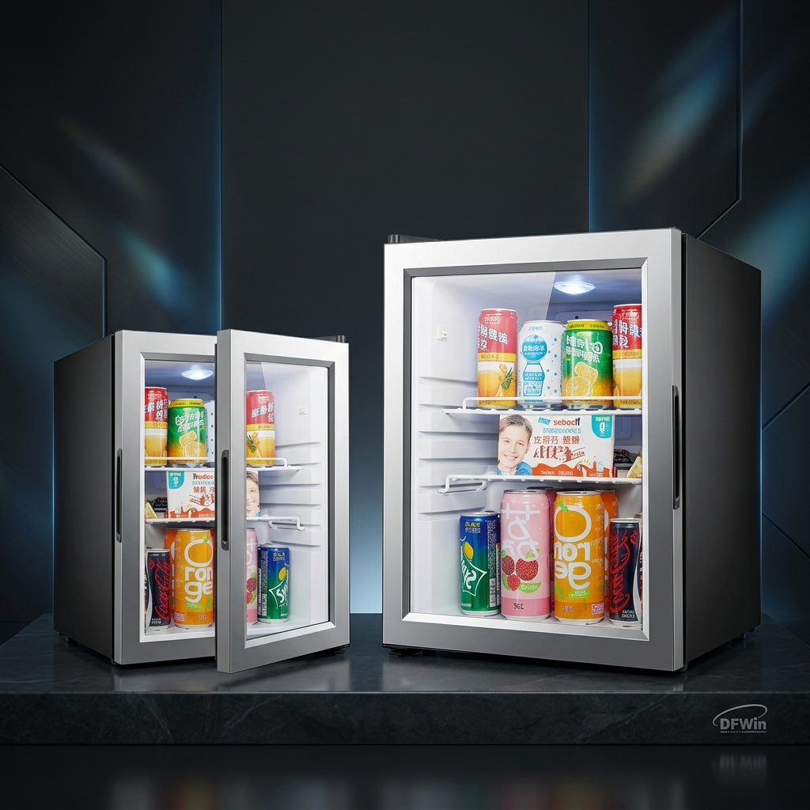

Millimeter Tolerances: Modular Cabin Minibars.
Modular shipbuilding operations. DFWIN partners with Piikkio Works to design, qualify, and supply custom cabinet-fit minibar chassis systems for passenger cabin prefabricated units.

The Cabinet-Fit Solution
Chassis dimensions are custom-calibrated to slide into existing modular cabin millwork, featuring enhanced heat dissipation ventilation grills and low-noise absorption systems specified for compact stateroom layouts.
Prefabricated Outfitting
Piikkio Works builds modular cabin systems for major shipyards, notably Meyer Turku. Cabin units are completely preassembled—including carpet, wallpaper, lights, and appliances—before being hoisted into hulls. This requires minibar fridges that meet exact millimeter dimensions to fit pre-cut millwork, provide proper heat ventilation, and have low defect rates, as replacing a units is incredibly costly once cabin modules are welded.
Millimeter QA Controls
We customized the minibar chassis housing specifically for Piikkio Works cabin specifications. DFWIN QA staff monitored manufacturing lines, verifying dimensions using precise fixtures. We integrated testing protocols to ensure quiet operations. To mitigate supply chain bottlenecks, we set up a buffer warehouse in Finland to deliver cargo directly to the factory assembly lines on a just-in-time schedule.
Seamless Production
Thousands of cabinet-fit minibar modules supplied directly to Piikkio Works assembly lines without a single production line stoppage. The units fit prefabricated cabin millwork precisely and run reliably, validating DFWIN's ability to coordinate custom engineering, factory QA, and just-in-time European warehousing.
Why It Matters
"In modular shipbuilding, tolerances are measured in millimeters. Standard off-the-shelf appliances won't fit. You need custom-fit engineering and a reliable supply chain. Our partnership with Piikkio Works proves we can execute on both."